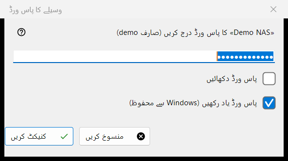
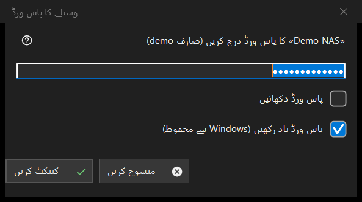

وسیلے کا پاس ورڈ
یہ کس مقصد کے لیے ہے
ایک محفوظ سرور یا نیٹ ورک فولڈر کا پاس ورڈ مانگتی ہے۔ یہ تب کھلتی ہے جب آپ ایسا وسیلہ کھولیں جس کا پاس ورڈ محفوظ نہ ہو، جب محفوظ پاس ورڈ مسترد ہو جائے، جب سرور کے ہدفی فولڈر یا کسی درآمد کا پاس ورڈ درکار ہو، اور PIN سے محفوظ فولڈر کے لیے وسیلے کا PIN کے عنوان سے۔


اس ترتیب میں
- پاس ورڈ ٹائپ کریں؛ وہ چھپا رہتا ہے، اور پاس ورڈ دکھائیں اسے دکھاتا ہے۔
- طے کریں کہ پاس ورڈ یاد رکھیں (Windows سے محفوظ) آپشن منتخب رکھنا ہے یا نہیں۔
- کنیکٹ کریں (Enter) دبائیں، یا روکنے کے لیے منسوخ (Esc)۔
عناصر
پاس ورڈ
اشارے میں وسیلہ اور صارف کا نام ہوتا ہے۔ پاس ورڈ بالکل ویسا ہی لیا جاتا ہے جیسا ٹائپ ہوا، اسپیس سمیت۔ خانہ خالی ہو تو یہ پیغام آتا ہے: پاس ورڈ درج کریں۔ پاس ورڈ دکھائیں آپشن شروع میں بند ہوتا ہے۔
پاس ورڈ یاد رکھیں
خانہ ڈیفالٹ طور پر منتخب ہوتا ہے۔ منتخب ہو تو پاس ورڈ Windows کے ذریعے آپ کے اکاونٹ کے لیے انکرپٹ کر کے رکھا جاتا ہے، اور صرف تب جب کنکشن اسے درست ثابت کر چکا ہو؛ منتخب نہ ہو تو وہ صرف موجودہ رن کے لیے میموری میں رہتا ہے۔ جہاں پاس ورڈ ویسے ہی محفوظ ہوتا ہے، مثلاً سیٹنگز کی فائل درآمد کرتے وقت، وہاں اور PIN موڈ میں خانہ چھپا ہوتا ہے۔
مسترد پاس ورڈ
سرور پچھلا پاس ورڈ مسترد کر دے تو ونڈو دوبارہ پوچھتی ہے اور یہ لائن دکھاتی ہے: پاس ورڈ قبول نہیں ہوا۔ اسے دوبارہ درج کریں۔
PIN موڈ
PIN سے محفوظ فولڈر کا عنوان وسیلے کا PIN ہوتا ہے اور اشارہ نامزد وسیلے کا PIN مانگتا ہے۔ یاد رکھنے کا خانہ نہیں ہوتا، اور مسترد PIN پر یہ پیغام آتا ہے: PIN مسترد ہو گیا۔ اسے دوبارہ درج کریں۔